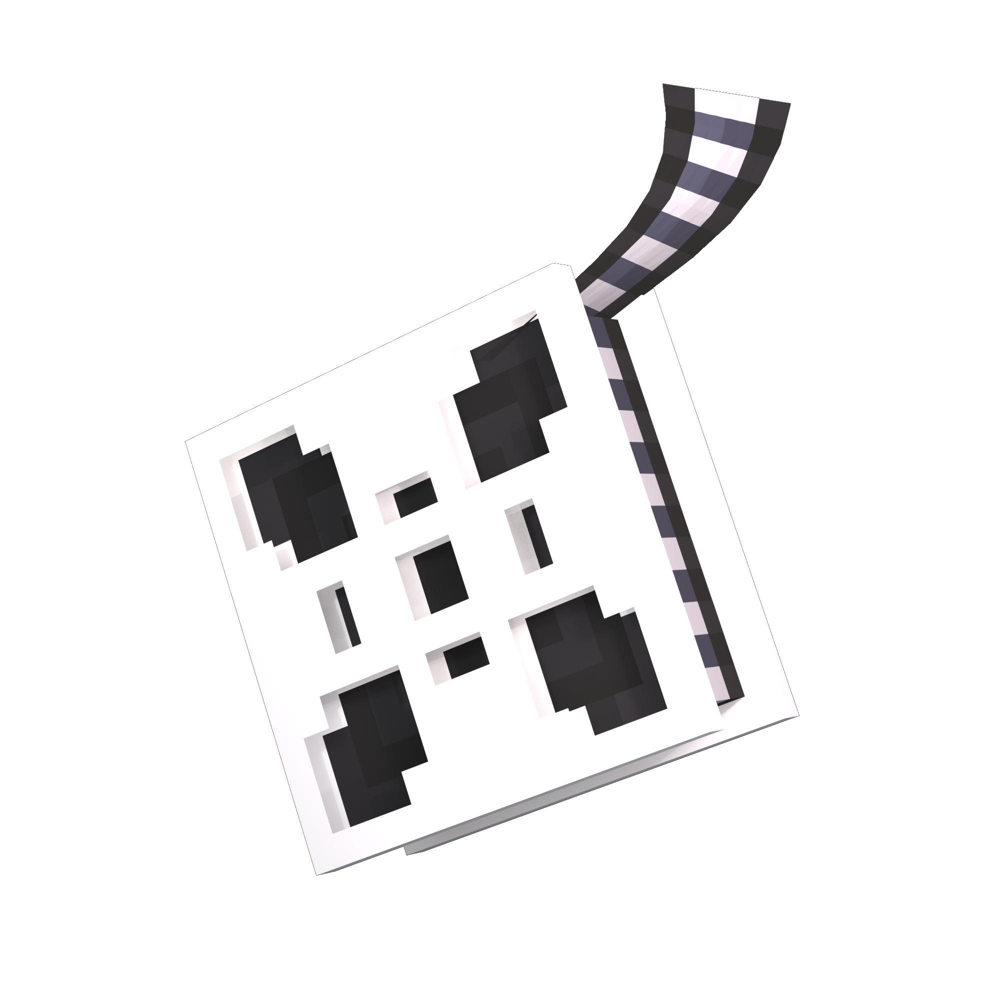

Practical guides for installation, camera setup, sequence authoring, and integrations.
Format update: Sequences currently support format: 1 (glide blocks script) and format: 2 (glide runs while script continues). See the Codex Library Pack for the full version notes.
Install the plugin, generate folders, and run your first sequence.
Where camera, sequence, and output files are stored.
Fast reference for every command and required permission.
Define camera YAML and use in-game sequence editor workflow.
Move between player-relative and mob-relative anchors.
Script camera playback with delays, glides, and overlays.
Complete DSL reference with examples.
Configure early-exit triggers and condition handling.
Trigger sequences from mechanics and target MythicMobs entities.
Copy-ready docs source including sequence format version notes and update guidance.
Common issues and fixes from real setup workflows.